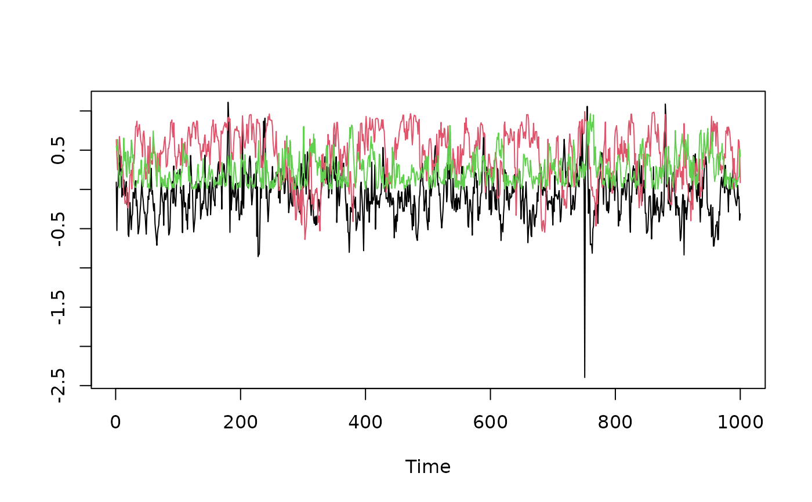

All the heavy lifting in stochvol is implemented in C++
with the help of R packages Rcpp and RcppArmadillo.
These functions call the MCMC samplers in C++ directly without any
any validation and transformations, expert use only!
svsample_fast_cpp(
y,
draws = 1,
burnin = 0,
designmatrix = matrix(NA),
priorspec = specify_priors(),
thinpara = 1,
thinlatent = 1,
keeptime = "all",
startpara,
startlatent,
keeptau = !inherits(priorspec$nu, "sv_infinity"),
print_settings = list(quiet = TRUE, n_chains = 1, chain = 1),
correct_model_misspecification = FALSE,
interweave = TRUE,
myoffset = 0,
fast_sv = get_default_fast_sv()
)
svsample_general_cpp(
y,
draws = 1,
burnin = 0,
designmatrix = matrix(NA),
priorspec = specify_priors(),
thinpara = 1,
thinlatent = 1,
keeptime = "all",
startpara,
startlatent,
keeptau = !inherits(priorspec$nu, "sv_infinity"),
print_settings = list(quiet = TRUE, n_chains = 1, chain = 1),
correct_model_misspecification = FALSE,
interweave = TRUE,
myoffset = 0,
general_sv = get_default_general_sv(priorspec)
)numeric vector of the observations
single positive integer, the number of draws to return (after the burn-in)
single positive integer, length of warm-up period, this number of draws are discarded from the beginning
numeric matrix of covariates. Dimensions:
length(y) times the number of covariates. If there are
no covariates then this should be matrix(NA)
a priorspec object created by
specify_priors
single number greater or equal to 1, coercible to integer.
Every thinparath parameter draw is kept and returned. The default
value is 1, corresponding to no thinning of the parameter draws i.e. every
draw is stored.
single number greater or equal to 1, coercible to integer.
Every thinlatentth latent variable draw is kept and returned. The
default value is 1, corresponding to no thinning of the latent variable
draws, i.e. every draw is kept.
Either 'all' (the default) or 'last'. Indicates which latent volatility draws should be stored.
named list, containing the starting values for the parameter draws. It must contain elements
mu: an arbitrary numerical value
phi: real number between -1 and 1
sigma: a positive real number
nu: a number larger than 2; can be Inf
rho: real number between -1 and 1
beta: a numeric vector of the same length as the number of covariates
latent0: a single number, the initial value for h0
vector of length length(y),
containing the starting values for the latent log-volatility draws.
Logical value indicating whether the 'variance inflation factors' should be stored (used for the sampler with conditional t innovations only). This may be useful to check at what point(s) in time the normal disturbance had to be 'upscaled' by a mixture factor and when the series behaved 'normally'.
List of three elements:
quiet: logical value indicating whether the progress bar and other informative output during sampling should be omitted
n_chains: number of independent MCMC chains
chain: index of this chain
Please note that this function does not run multiple independent chains
but svsample offers different printing functionality depending on
whether it is executed as part of several MCMC chains in parallel
(chain specific messages) or simply as a single chain (progress bar).
Logical value. If FALSE,
then auxiliary mixture sampling is used to sample the latent
states. If TRUE, extra computations are made to correct for model
misspecification either ex-post by reweighting or on-line using a
Metropolis-Hastings step.
Logical value. If TRUE,
then ancillarity-sufficiency interweaving strategy (ASIS) is applied
to improve on the sampling efficiency for the parameters.
Otherwise one parameterization is used.
Single non-negative number that is used in
log(y^2 + myoffset) to prevent -Inf values in the auxiliary
mixture sampling scheme.
named list of expert settings. We recommend the use of get_default_fast_sv.
named list of expert settings. We recommend the use of get_default_general_sv.
The sampling functions are separated into fast SV and general SV. See more details in the sections below.
Fast SV was developed in Kastner and Fruehwirth-Schnatter (2014). Fast SV estimates an approximate SV model without leverage, where the approximation comes in through auxiliary mixture approximations to the exact SV model. The sampler uses the ancillarity-sufficiency interweaving strategy (ASIS) to improve on the sampling efficiency of the model parameters, and it employs all-without-a-loop (AWOL) for computationally efficient Kalman filtering of the conditionally Gaussian state space. Correction for model misspecification happens as a post-processing step.
Fast SV employs sampling strategies that have been fine-tuned and specified for
vanilla SV (no leverage), and hence it can be fast and efficient but also more limited
in its feature set. The conditions for the fast SV sampler: rho == 0; mu
has either a normal prior or it is also constant 0; the prior for phi
is a beta distribution; the prior for sigma^2 is either a gamma distribution
with shape 0.5 or a mean- and variance-matched inverse gamma distribution;
either keeptime == 'all' or correct_model_misspecification == FALSE.
These criteria are NOT VALIDATED by fast SV on the C++ level!
General SV also estimates an approximate SV model without leverage, where the approximation comes in through auxiliary mixture approximations to the exact SV model. The sampler uses both ASIS and AWOL.
General SV employs adapted random walk Metropolis-Hastings as the proposal for
the parameters mu, phi, sigma, and rho. Therefore,
more general prior distributions are allowed in this case.
# Draw one sample using fast SV and general SV
y <- svsim(40)$y
params <- list(mu = -10, phi = 0.9, sigma = 0.1,
nu = Inf, rho = 0, beta = NA,
latent0 = -10)
res_fast <- svsample_fast_cpp(y,
startpara = params, startlatent = rep(-10, 40))
res_gen <- svsample_general_cpp(y,
startpara = params, startlatent = rep(-10, 40))
# Embed SV in another sampling scheme
## vanilla SV
len <- 40L
draws <- 1000L
burnin <- 200L
param_store <- matrix(NA, draws, 3,
dimnames = list(NULL,
c("mu", "phi", "sigma")))
startpara <- list(mu = 0, phi = 0.9, sigma = 0.1,
nu = Inf, rho = 0, beta = NA,
latent0 = 0)
startlatent <- rep(0, len)
for (i in seq_len(burnin+draws)) {
# draw the data in the bigger sampling scheme
# now we simulate y from vanilla SV
y <- svsim(len, mu = 0, phi = 0.9, sigma = 0.1)$y
# call SV sampler
res <- svsample_fast_cpp(y, startpara = startpara,
startlatent = startlatent)
# administrate values
startpara[c("mu","phi","sigma")] <-
as.list(res$para[, c("mu", "phi", "sigma")])
startlatent <- drop(res$latent)
# store draws after the burnin
if (i > burnin) {
param_store[i-burnin, ] <-
res$para[, c("mu", "phi", "sigma")]
}
}
### quick look at the traceplots
ts.plot(param_store, col = 1:3)
